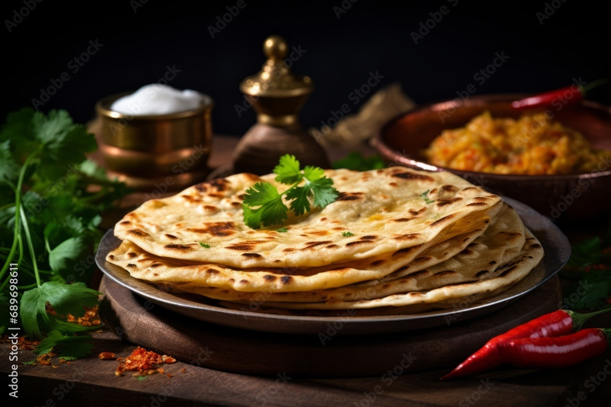
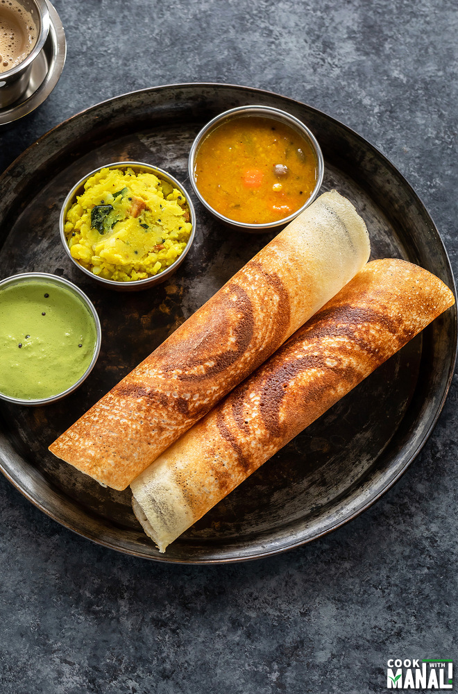

----Take a culinary journey around the world and explore traditional dishes from various cultures.
----Meet the chefs and home cooks who are passionate about food and learn their personal stories.
----Uncover the historical significance of different foods and how they've evolved over time.